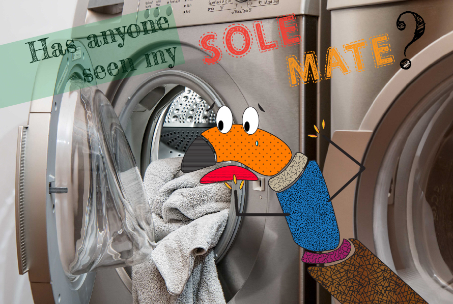

Illustrator was challenging for me and the least enjoyable of the programs I've experimented with in the last few months. However, in using it more I can see its appeal. For this project, I was inspired by a friend who makes ceramic sock puppets and thought they would be a cute character to riff on.
